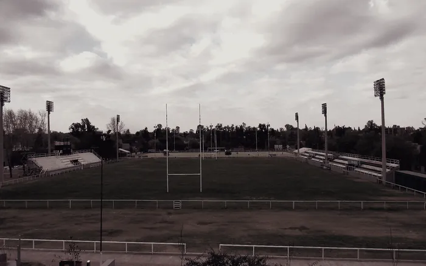

Unión Cordobesa
Top 10
de Córdoba
Canchas duras en marzo, pesadas en julio. Viajes cortos pero semanas largas: el plan de fuerza se acomoda alrededor de los dos entrenamientos de club, no al revés.
- Bloque con dos sesiones de gimnasio semanales
- Trabajo de scrum en piso blando y en piso duro